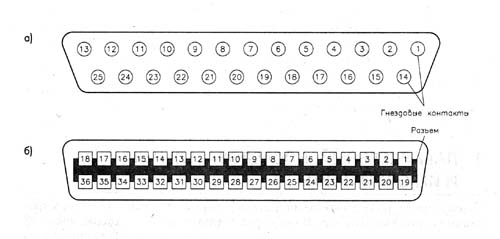
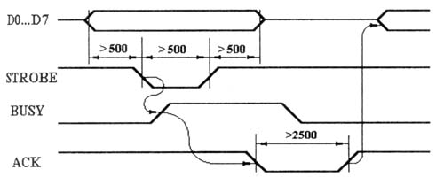
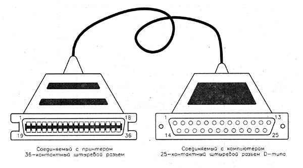
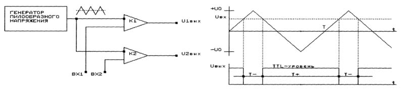
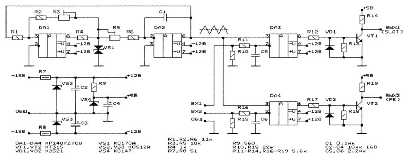
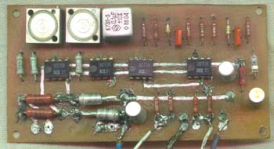

Двухканальный АЦП с широтно-импульсной
модуляцией для ввода данных в компьютер
через порт принтера (двухкоординатный самописец)
Двухканальный аналого-цифровой преобразователь (АЦП) с широтно-импульсной модуляцией (ШИМ) предназначен для обеспечения последовательного ввода данных в персональный компьютер с использованием порта принтера (LPT).
Введение
При проведении исследований зависимости одного параметра от другого, например, распределения магнитной индукции по угловой координате или усилия электромагнитного привода от перемещения штока необходим двухкоординатный самописец. Аппаратные самописцы громоздки, дороги и являются специализированными устройствами. Для решении задачи привлекают внимание персональные компьютеры, получившие в последнее время широкое распространение. При съеме данных с медленных АЦП (ситуация двухкоординатного аппаратного самописца) и их обработке могут быть использованы компьютеры, построенные даже на 286 - 486 процессоре. Такие компьютеры все еще имеются в эксплуатации, и цена их невелика. Если данные должны применяться в каких-либо сложных программах обработки, то они могут быть переданы в более мощный компьютер непосредственно с АЦП, а также с помощью сетевого интерфейса, модемного соединения или даже дискет. Препятствием является дороговизна плат сбора данных, имеющихся в продаже. Использование шины ISA позволяло конструировать достаточно простые и дешевые платы ввода-вывода. Однако эта шина утратила свое значение. Устройства для шины PCI довольно дороги и сложны. То же самое можно сказать про интерфейс USB. Поэтому было решено разработать простой и дешевый АЦП, который можно было бы подключать к внешнему порту компьютера. В качестве такого порта был выбран порт принтера (LPT), имеющийся практически во всех компьютерах, как морально устаревших, так и новых, в том числе и в ноутбуках. Еще одним из преимуществ порта принтера является достаточно большое количество линий ввода-вывода, в отличие от последовательного порта (COM), поэтому возможно упрощение аппаратной части АЦП или увеличение числа каналов ввода-вывода при использовании последовательного обмена. К тому же в новых разработках ноутбуков часто наблюдается отсутствие порта COM в отличие от порта LPT, и даже если порта LPT нет, можно использовать переходник с USB на LPT.
Протокол обмена по интерфейсу порта принтера
Внешний вид разъемов порта LPT компьютера и принтера представлен на рис. 1 а) и б), соответственно.

Рис. 1. а) Разъем порта LPT компьютера: 25-контактная розетка D-типа. б) Разъем порта LPT принтера: 36-контактная розетка параллельного типа.
Назначение контактов разъема LPT (в соответствии с [1] и [2]) (режим SPP, тип выходных сигналов - ТТЛ):
| Контакт разъема компьютера | Цепь | I - ввод в компьютер; O - вывод из компьютера | Контакт разъема принтера | Назначение |
| 1 | -STROBE | O | 1 | Сигнал стробирования данных. Данные действительны как по переднему, так и по заднему фронту этого сигнала. Сигнал сообщает приемнику (принтеру), что можно принимать данные. |
| 2 | D0 | O | 2 | 8-разрядная шина данных для передачи из компьютера в принтер. Логика сигналов положительная. |
| 3 | D1 | O | 3 | - // - |
| 4 | D2 | O | 4 | - // - |
| 5 | D3 | O | 5 | - // - |
| 6 | D4 | O | 6 | - // - |
| 7 | D5 | O | 7 | - // - |
| 8 | D6 | O | 8 | - // - |
| 9 | D7 | O | 9 | - // - |
| 10 | -ACK | I | 10 | Сигнал подтверждения принятия данных и готовности приемника (принтера) принять следующие данные (асинхронный обмен). |
| 11 | BUSY | I | 11 | Сигнал занятости принтера обработкой полученных данных и неготовности принять следующие данные. Активен также при переходе принтера в состояние off-line или при ошибке, а также при отсутствии бумаги. Компьютер начинает новый цикл только после снятия -ACK и после снятия BUSY. |
| 12 | PE | I | 12 | Сигнал конца бумаги. Компьютер переходит в режим ожидания. Сигнал снимается, когда вставлен новый лист бумаги. |
| 13 | SLCT | I | 13 | Сигнал готовности приемника: приемник выбран и готов к работе. |
| 14 | -AUTO_FD | O | 14 | Сигнал автоматического перевода строки. |
| 15 | -ERROR | I | 32 | Сигнал ошибки принтера. Активен при внутренней ошибке, переходе в состояние off-line или при отсутствии бумаги. |
| 16 | -INIT | O | 31 | Сигнал инициализации (сброса) принтера. Длительность не менее 2.5 мкс. Очистка буфера печати. |
| 17 | -SLCT_IN | O | 36 | Сигнал принтеру о том, что он выбран и последует передача данных. |
| 18 ... 25 | GND | - | 19 ... 30, 33 | Общий (земля). |
| - | - | - | 16 | Логическая земля. |
| - | - | - | 17 | Заземление на шасси. |
| - | - | - | 18, 34 | Не используются. |

Рис. 2. Цикл передачи данных по интерфейсу порта принтера (время в наносекундах).
Базовый адрес порта (378h, 278h, 3BCh) используется для передачи байта данных из компьютера в принтер (бит 0 - D0; бит 1 - D1; бит 2 - D2; бит 3 - D3; бит 4 - D4; бит 5 - D5; бит 6 - D6; бит 7 - D7).
Базовый адрес порта + 1 (379h, 279h, 3BDh) используется для передачи из принтера в компьютер битов состояния (бит 3 - -ERROR; бит 4 - SLCT; бит 5 - PE; бит 6 - -ACK; бит 7 - BUSY).
Базовый адрес порта + 2 (37Ah, 27Ah, 3BEh) используется для передачи из компьютера в принтер битов управления (бит 0 - -STROBE; бит 1 - -AUTO_FD; бит 2 - -INIT; бит 3 - -SLCT_IN; бит 4: когда равен единице, разрешено прерывание от принтера).
Прерывания портов принтеров: IRQ7 для базового адреса 378h; IRQ5 для базового адреса 278h.
Таким образом, для ввода данных с внешнего устройства в компьютер через порт принтера в режиме SPP возможно использование пяти линий, соответствующих сигналам: -ERROR, SLCT, PE, -ACK, BUSY. Данные могут быть переданы в последовательном режиме (5 каналов) или по полбайта (1 канал). Адрес порта, используемого для приема данных от внешнего устройства в компьютер, равен базовому адресу порта + 1 (как правило, 379h). Все сигналы интерфейса имеют уровни ТТЛ и рассчитаны на подключение одного стандартного входа ТТЛ. Максимальная длина кабеля по стандарту 1.8 м, но, вообще говоря, может достигать и 5 м. Внешний вид кабеля для подключения принтера показан на рис. 3.

Рис. 3. Кабель для подключения принтера по интерфейсу LPT.
Принцип работы АЦП с ШИМ
На рис. 4 приведена функциональная схема АЦП с ШИМ и графики, объясняющие принцип его работы.

Рис. 4. Функциональная схема АЦП с широтно-импульсной модуляцией.
Генератор пилообразного напряжения (ГПН) формирует пилообразный сигнал с периодом T, напряжение которого Uгпн изменяется от -U0 до +U0. Напряжение с выхода ГПН подается на инвертирующие входы компараторов K1 и K2. На неинвертирующие входы компараторов подается входное напряжение (Uвх), которое требуется измерить. На выходе компараторов формируется последовательность прямоугольных сигналов с ТТЛ-уровнями: логическая единица, когда Uвх > Uгпн; логический ноль, когда Uвх < Uгпн. Выходные напряжения компараторов подаются на входные линии порта LPT. Измеряя временные интервалы T- и T+ с помощью компьютерной программы, можно вычислить входное напряжение:
Uвх = U0(T+ - T- )/(T+ + T- )
Из формулы видно, что результат измерения не зависит от периода T пилообразного сигнала ГПН, а также от быстродействия компьютера или способа построения программы по определению величин T+ и T-. Причем эти величины могут быть относительными.
Техническая реализация двухканального АЦП с широтно-импульсной модуляцией
Принципиальная схема АЦП приведена на рис. 5. Для двухканального АЦП с последовательным вводом данных было решено использовать линии SLCT и PE порта LPT, так как логика сигналов для них положительная.

Рис. 5. Схема принципиальная АЦП с широтно-импульсной модуляцией для ввода данных в компьютер через порт принтера.
На операционных усилителях (ОУ) DA1, DA2 построен генератор треугольных импульсов по схеме интегратор (DA2) - триггер Шмидта (DA1). Частота следования импульсов регулируется потенциометром R5, порог срабатывания триггера Шмидта - потенциометром R3. Параметры пилообразного напряжения: период T = 4 мсек, амплитуда U0 = 5 В. ОУ DA3, DA4 выполняют роль компараторов (сравнение входных напряжений с пилообразным). Диапазон входных напряжений -5 ... +5 В. Каскады на транзисторах VT1, VT2 служат для приведения выходных сигналов к уровню ТТЛ. Питание АЦП осуществляется от внешнего источника с двухполярным выходом (+ 15 В). Для получения питающих напряжений (+ 12 В, +5 В) служит параметрический стабилизатор напряжения на стабилитронах VS2 - VS4. Внешний вид печатной платы (макетный вариант) АЦП показан на рис. 6.

Рис. 6. Внешний вид макетной платы АЦП.
Программное обеспечение двухканального АЦП с ШИМ
Для совместной работы с компьютерами на основе 286 - 486 процессора в режиме DOS может использоваться модуль Sgn10.tpu, разработанный с помощью Turbo Pascal 5.5:
UNIT SGN10; {Program Recorder, файл Sgn10.pas}
INTERFACE
Uses Dos, CRT;
Function Sgn01: real;
Function Sgn02: real;
IMPLEMENTATION
Const N = 6; {количество периодов измерения}
Const U0 = 5; {опорное напряжение, вольт}
Function PE: byte; {маскированное значение сигнала PE порта принтера 379h (конт.
12), 0 0 PE 0 0 0 0 0}
begin
PE := port[$379] and $20;
end;
Function SLCT: byte; {маскированное значение сигнала SLCT порта принтера 379h
(конт. 13), 0 0 0 SLCT 0 0 0 0}
begin
SLCT := port[$379] and $10;
end;
Function Sgn01: real; {величина сигнала на ВХ1 - SLCT в вольтах}
var i, tmin, tpl: integer;
begin
tmin:=0;
tpl:=0;
repeat
tpl:=tpl+1
until ((SLCT = 0) or (tpl>30000)); {обнаружение положительного фронта входного
сигнала}
repeat
tmin:=tmin+1
until ((SLCT = $10) or (tmin>30000));
tmin:=0;
tpl:=0;
for i:=1 to N do {измерения в течение N периодов}
begin
repeat {измерение длительности ненулевого значения входного сигнала SLCT в
условных единицах}
tpl:=tpl+1;
until ((SLCT = 0) or (tpl>30000));
repeat {измерение длительности нулевого значения входного сигнала SLCT в
условных единицах}
tmin:=tmin+1;
until ((SLCT = $10) or (tmin>30000));
end;
if tmin > 30000 then Sgn01 := -U0 else
if tpl > 30000 then Sgn01 := U0 else
Sgn01 := U0*(tpl-tmin)/(tpl+tmin);
end;
Function Sgn02: real; {величина сигнала на ВХ2 - PE в вольтах}
var i, tmin, tpl: integer;
begin
tmin:=0;
tpl:=0;
repeat
tpl:=tpl+1
until ((PE = 0) or (tpl>30000)); {обнаружение положительного фронта входного
сигнала}
repeat
tmin:=tmin+1
until ((PE = $20) or (tmin>30000));
tmin:=0;
tpl:=0;
for i:=1 to N do {измерения в течение N периодов}
begin
repeat {измерение длительности ненулевого значения входного сигнала PE в
условных единицах}
tpl:=tpl+1;
until ((PE = 0) or (tpl>30000));
repeat {измерение длительности нулевого значения входного сигнала PE в условных
единицах}
tmin:=tmin+1;
until ((PE = $20) or (tmin>30000));
end;
if tmin > 30000 then Sgn02 := -U0 else
if tpl > 30000 then Sgn02 := U0 else
Sgn02 := U0*(tpl-tmin)/(tpl+tmin);
end;
END.
Значения функций Sgn01 и Sgn02 равны значениям напряжения в
вольтах на входах ВХ1 и ВХ2, соответственно.
Файл: Sgn10.tpu: Sgn10.002 (1840 байт). Для использования скачанный файл Sgn10.002 необходимо
переименовать в Sgn10.tpu.
Для работы под управлением операционных систем (ОС) Windows 95, 98 могут быть использованы приведенная ниже библиотека Sgnprn10.dll, созданная с помощью Turbo Pascal for Windows, и программы, разработанные под Visual Basic 3. Для нормальной работы в папке C:\Windows\System\ должна находиться библиотека VBRun300.dll.
Library SgnPrn; {Файл Sgnprn10.pas}
uses WinCrt;
Const N=6;
{Const U0=5;}
Const MaxT=30000;
Function PE: byte;
begin
PE:=port[$379] and $20;
end;
Function SLCT: byte;
begin
SLCT:=port[$379] and $10;
end;
Function Signal(x: integer): integer; export;
var i, tmin, tpl: integer;
begin
case x of
1:
begin
tmin:=0;
tpl:=0;
repeat
tpl:=tpl+1
until ((SLCT=0) or (tpl>MaxT));
repeat
tmin:=tmin+1
until ((SLCT=$10) or (tmin>MaxT));
tmin:=0;
tpl:=0;
for i:=1 to N do
begin
repeat
tpl:=tpl+1;
until ((SLCT=0) or (tpl>MaxT));
repeat
tmin:=tmin+1;
until ((SLCT=$10) or (tmin>MaxT));
end;
if tmin>MaxT then Signal:=-1000 else
if tpl>MaxT then Signal:=1000 else
Signal:=round(((tpl-tmin)/(tpl+tmin))*1000);
end;
2:
begin
tmin:=0;
tpl:=0;
repeat
tpl:=tpl+1
until ((PE=0) or (tpl>MaxT));
repeat
tmin:=tmin+1
until ((PE=$20) or (tmin>MaxT));
tmin:=0;
tpl:=0;
for i:=1 to N do
begin
repeat
tpl:=tpl+1;
until ((PE=0) or (tpl>MaxT));
repeat
tmin:=tmin+1;
until ((PE=$20) or (tmin>MaxT));
end;
if tmin>MaxT then Signal:=-1000 else
if tpl>MaxT then Signal:=1000 else
Signal:=round(((tpl-tmin)/(tpl+tmin))*1000);
end;
end;
end;
exports
Signal index 1;
begin
end.
Значения функций Signal (1) и Signal (2) соответствуют значениям напряжения ВХ1 и ВХ2 (Signal = 1000, когда Uвх = 5 В). Файл: Sgnprn10.dll: Sgnprn10.002 (9216 байт). Для использования скачанный файл Sgnprn10.002 необходимо переименовать в Sgnprn10.dll.
Пример построения вольтметра: V_15.rar (файл V_15.exe, упакован WinRAR 3.60, размер 2059 байт). Программа предназначена для работы под ОС Windows 95, Windows 98, но, вообще говоря, может работать и под другими ОС семейства Windows. Для нормальной работы в папку C:\Windows\System\ необходимо скопировать библиотеку VBRun300.dll (~400 кбайт). В папку с файлом V_15.exe необходимо поместить библиотеку Sgnprn10.002, переименовав ее в Sgnprn10.dll.
Скопированные файлы могут быть проверены на отсутствие вирусного кода в режиме on-line [3].
Ссылки:
02.02.2004
21.06.2010
20.06.2016
Альтернативные источники
энергии
Компьютеры и
Интернет
Магнитные поля
Механотронные системы
Перспективные
разработки
Электроника и технология